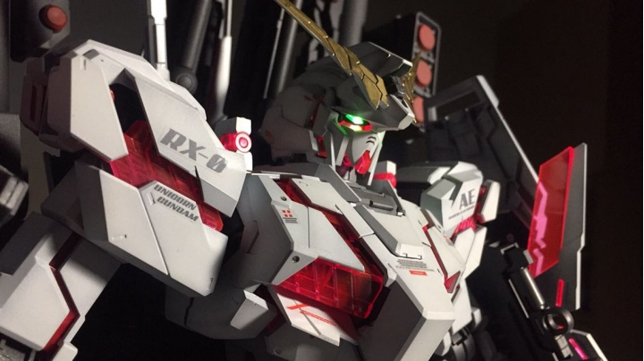

我的小汽車收藏
這是我的小車收藏，大部分都是1:64的比例，小巧精緻。

我最喜歡的鋼彈模型-獨角獸鋼彈
在所有的鋼彈之中我最喜歡這台，因為我喜歡他變形的結構，外型也很帥氣。這是在我高中的時候，每天晚上都花4個小時，費時四個月完成的鋼彈模型。他有36公分高，非常大!
Apex英雄
《Apex英雄》（英語：Apex Legends），是一個由Respawn Entertainment開發，由美商藝電發行的免費大逃殺類多人線上角色扮演第一人稱射擊遊戲。